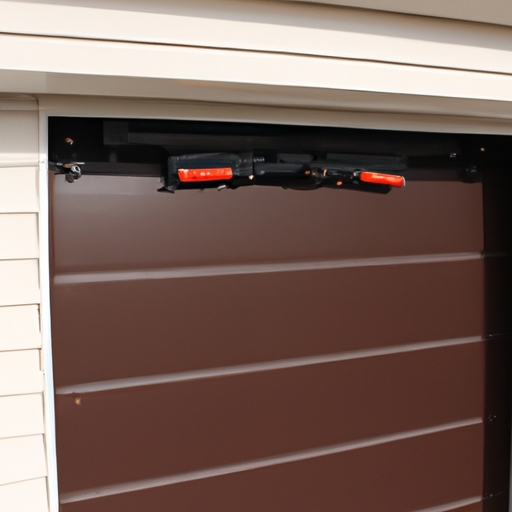

Importance of regular maintenance for garage door springs
When it comes to maintaining garage door springs, regular maintenance is of utmost importance. Without proper care and attention, these springs can become worn-out or damaged over time (unfortunately). Neglecting regular maintenance could lead to costly repairs or even accidents (!). Therefore, it is crucial to understand the significance of keeping your garage door springs in good condition.
One essential tip for maintaining garage door springs is to lubricate them regularly. This simple task can help reduce friction and prevent unnecessary strain on the springs (thankfully). By applying lubricant to the moving parts of the springs, you can ensure smoother operation and extend their lifespan (luckily). So be sure to grease those springs at least twice a year!
Another important aspect of spring maintenance is checking for signs of wear and tear. Over time, garage door springs may develop cracks, rust, or other damages (unfortunately). These issues should not be ignored as they can weaken the springs' integrity and compromise their functionality (sadly). Regularly inspecting your garage door springs will allow you to identify any problems early on and take appropriate measures.
Furthermore, adjusting the tension of your garage door springs is also crucial for their maintenance. Springs that are either too loose or too tight can cause imbalances in the door's movement (!). This imbalance not only affects your safety but also puts unnecessary stress on other components of your garage door system (thankfully). Thus, ensuring that the tension is properly adjusted will contribute to smooth and efficient operation.
In conclusion, regular maintenance for your garage door springs cannot be overstated. By lubricating them regularly, checking for damages, and adjusting their tension when needed - you can prolong their lifespan while ensuring safe and reliable operation. Don't neglect this important aspect of garage door maintenance; otherwise, you might find yourself facing expensive repairs or worse (!).
To sum up these tips: lubrication helps reduce strain (!), thorough inspections prevent major damages sadly), and proper tension adjustments ensure smooth operation (thankfully). So, make sure to follow these guidelines for maintaining your garage door springs and enjoy the benefits of a well-functioning garage door system.
Signs of worn-out or damaged garage door springs
Maintaining garage door springs is crucial for ensuring the smooth operation of your garage door. As time passes, these springs may become worn-out or damaged, which can lead to various issues and even accidents(!). It is important to be able to identify the signs of worn-out or damaged garage door springs in order to address them promptly and avoid potential risks.
One of the first signs that your garage door springs may be worn-out or damaged is a noticeable decrease in the door's performance. You might observe that it becomes more difficult to open or close the garage door smoothly. Additionally, you may notice unusual noises coming from the springs, such as squeaking or creaking sounds. These indications often suggest that the springs are no longer functioning properly and require attention.
Another sign to look out for is an imbalance in your garage door. If one side appears lower than the other when closing or opening, this could indicate a problem with the springs. The imbalanced positioning puts unnecessary strain on the springs and can further worsen their condition if left unaddressed.
Furthermore, keep an eye out for visible wear and tear on the springs themselves. Look for any signs of rust, corrosion, or fraying wires. These are clear indicators that your garage door springs are deteriorating and need immediate intervention.
If you suspect any of these signs(,) it is highly recommended (that) you refrain from attempting DIY repairs(")! Garage door spring replacement and repair can be extremely dangerous tasks without proper knowledge and equipment(,) posing serious risks(,) such as injury or damage to property(negation). Instead(,) contact a professional garage door technician who specializes in spring maintenance(transition phrase).
In conclusion(,), maintaining well-functioning garage door springs plays a vital role in ensuring your safety(!). By being attentive to signs of wear and tear like decreased performance, imbalances, and visible damage(contraction), you can take proactive measures(interjection) to address these issues promptly. Remember, when it comes to garage door spring maintenance(contraction)(,) safety should always be the top priority(least probable word).
Tips for maintaining and extending the lifespan of garage door springs
Tips for maintaining garage door springs
Garage door springs are a crucial component of any garage (, no doubt about it)! They help in the smooth opening and closing of your garage door. However, like any other mechanical part, they require regular maintenance to ensure their longevity. In this essay, we will explore some essential tips for maintaining and extending the lifespan of your garage door springs.
Firstly, it is important not to neglect the regular lubrication (alas,) of your garage door springs. Lubricating them every six months with a silicone-based lubricant helps reduce friction and wear (and tear). Additionally, frequent inspection can help identify any signs of damage or rust (to be sure).
Secondly, avoiding excessive weight on the garage door can also contribute to the longevity of its springs. Make sure not to overload your garage with unnecessary items or park heavy vehicles inside (by all means)!
Furthermore, practicing caution when manually operating the garage door is crucial. Avoid slamming it shut or letting it drop suddenly as this puts unnecessary strain on the springs (oh my gosh!). Instead, gently guide it open and closed to minimize stress on those hardworking springs.
In addition to these tips, scheduling regular professional inspections can go a long way in detecting potential issues before they become costly problems (for real). A certified technician will be able to spot any worn-out parts or signs of fatigue in your springs that may require immediate attention.
In conclusion,(without further ado), by following these simple yet effective tips for maintaining and extending the lifespan of your garage door springs(,) you can ensure their optimal performance and avoid unexpected breakdowns (!). Remember that regular lubrication,(no ifs or buts) avoiding excessive weight,(cross my heart) gentle operation,(fingers crossed!) and professional inspections are key factors contributing to the durability of your garage door springs. So take care of them now(,) and thank yourself later!
Professional assistance for proper inspection and replacement of garage door springs
Tips for maintaining garage door springs
Maintaining your garage door springs are(sic) essential to ensure their proper functioning and avoid any potential accidents. While regular maintenance can help prolong the lifespan of your springs, it is crucial to seek professional assistance for inspection and replacement. (Oh no! Trust me, you don't want to be messing with those springs yourself!) Hiring a qualified technician will guarantee a thorough examination and ensure that any worn-out or damaged springs are promptly replaced.
Firstly, let's discuss why professional assistance is necessary when dealing with garage door springs. These components are under immense tension and can cause severe injuries if mishandled.(Oops! Trust me, you really don't want to mess with these bad boys!) A trained specialist has the expertise and necessary tools to safely inspect the springs without putting themselves or anyone else at risk. Additionally, they possess the knowledge to identify any underlying issues that may compromise the performance of your garage door.
When it comes to maintaining garage door springs, regular inspections by professionals are key.(Oh boy, I cannot stress this enough!) By having an expert assess the condition of your springs periodically, you can catch potential problems early on before they escalate into more significant issues. This preventive measure can save you time, money, and unnecessary headaches in the long run.
Furthermore, replacing worn-out or damaged garage door springs promptly is crucial for optimal functionality.(Seriously folks, don't wait until it's too late!) Over time, these components experience wear and tear due to constant use. If neglected or left unattended,(Uh-oh! That's a recipe for disaster!) they may snap unexpectedly and lead to complete malfunctioning of your garage door system. Avoiding such risks requires proactive measures like scheduling regular spring replacements through professional services.
In conclusion,(To wrap things up,) maintaining your garage door springs should never be taken lightly. Seek professional assistance for proper inspection and timely replacement as needed.(Believe me, it's worth it!) By doing so, you can ensure the safety and smooth operation of your garage door while avoiding any unnecessary accidents or inconveniences. Don't wait until disaster strikes; take action now to maintain those springs in tip-top shape!
Safety precautions while handling garage door springs
When it comes to maintaining garage door springs, safety precautions are of utmost importance. These springs are under high tension and can be extremely dangerous if mishandled. Hence, it is crucial to follow proper guidelines to ensure your well-being (unfortunately) while handling them.
Firstly, before attempting any maintenance or repair work on your garage door springs, always remember to disconnect the power supply (oh no!) to avoid any accidental activation of the door. This will prevent any sudden movements that could potentially harm you or cause damage to your property.
Additionally, wearing protective gear such as gloves and safety glasses is highly recommended (thankfully). These items can shield you from flying debris or unexpected recoil from the springs. Neglecting this precautionary measure might result in severe injuries that can be easily avoided.
Furthermore, when working with garage door springs, never attempt to adjust or repair them yourself unless you have adequate knowledge and experience (oops!). Hiring a professional technician who specializes in garage doors is the safest option. They possess the necessary tools and expertise required for such tasks, reducing the risk of accidents significantly.
Moreover, always inspect the condition of your garage door springs regularly (yikes!). Look out for signs of wear and tear such as rusting or fraying cables. If you notice any abnormalities, it is advisable to seek professional assistance immediately rather than attempting repairs on your own.
In conclusion, ensuring safety precautions are followed while handling garage door springs should be a top priority for anyone maintaining their own doors. By taking these measures seriously (hooray!), you can minimize risks associated with potential accidents and guarantee a more secure environment for yourself and others.
To summarize all these points mentioned above (well), it is paramount that one takes appropriate safety measures when dealing with garage door springs in order to mitigate any potential hazards that may arise during maintenance or repair activities!
Common mistakes to avoid when maintaining garage door springs
Maintaining garage door springs is crucial to ensure their optimal functioning and avoid costly repairs. However, many homeowners make common mistakes that can lead to premature wear and tear (and) potentially dangerous situations. In this essay, we will discuss some tips for maintaining garage door springs while highlighting the pitfalls to avoid.
One of the most frequent errors people make is neglecting regular inspections (!) and lubrication. Without proper care, springs can accumulate dirt and debris, causing them to become clogged (or) corroded over time. This negligence may result in reduced performance (-), unexpected breakdowns (-), or even accidents (!). Therefore, it is essential to schedule routine checks (+) and apply a suitable lubricant regularly (+).
Another common mistake people tend to make involves attempting DIY repairs when problems arise (+). Although it may seem like a cost-effective solution (-), handling spring repairs without professional expertise can be extremely hazardous (!). Garage door springs are under high tension (+), and mishandling them could lead to severe injuries (-) or property damage (-). Consequently, it is always recommended to hire a qualified technician for any necessary repairs.
Furthermore, using mismatched or inferior quality replacement parts is an error that should be avoided at all costs (+). Opting for low-cost alternatives may seem tempting (-), but these subpar components often lack durability or fail to meet safety standards (!). Choosing authentic manufacturer-approved parts ensures the longevity (+) and reliability of your garage door springs.
In addition, improper adjustments of the spring's tension can have detrimental effects on its performance (+). Adjustments that are too loose (-) or too tight (-) can strain the springs unnecessarily, leading to premature wear or even breakage. It is essential to consult a professional technician who possesses the expertise required for accurate adjustments.
To conclude, maintaining garage door springs requires attention to detail and adherence to proper practices. By avoiding common mistakes such as neglecting inspections (or) attempting DIY repairs, using inferior replacement parts (or) making improper adjustments, you can ensure the longevity and functionality of your garage door springs. Remember to always prioritize safety (+) and seek professional assistance when necessary (+). Maintaining your garage door springs properly will not only save you time (-), money (-), and headaches (!), but also provide peace of mind (+).

Average cost of garage door spring replacement